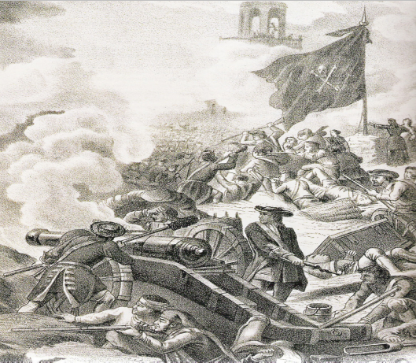

A tots i a totes!
En aquest context històric en què una part considerable de la societat catalana exerceix de forma sobirana la desobediència política què, invalida als Països Catalans la Constitució del Regne d'Espanya, i la pròpia existència de l'Estat de les Autonomies i de la monarquia borbònica:
Els Comitès Anarquistes en Defensa de la República Catalana avalem la declaració unilateral col·lectiva, sorgida de la pròpia base social combativa del 1r d’octubre de 2017 al Principat de Catalunya, reivindiquem una independència total dels Països Catalans, des de la proclamació dels cantons comunals a cada comarca, lliures de l'estat i de les seves sucursals autonòmiques. Igualment rebutgem el domini del jou de la República francesa a les comarques del nord.
El procés revolucionari d'alliberament social i nacional no pot esperar cap mena de solució dintre del marc polític processista, que de fet ha esdevingut el darrer dic de contenció del moviment revolucionari republicà a casa nostra. Tampoc hem de reclamar cap nova consulta en el Principat de Catalunya sota la direcció contradictòria del parlament autonomista català, que no qüestiona el marc legal del Regne d'Espanya. Per nosaltres el referèndum d’autodeterminació dintre del territori del Principat de Catalunya ja s’ha efectuat i guanyat. La direcció política processista és qui va impedir la seva aplicació efectiva, que nosaltres reivindiquem.
L’existència de masses i sectors de lumpen proletariat en els Països Catalans, alienades tant dels aspectes socials i nacionals ha de marcar la nostra agenda, en el sentit que ens obliga a confrontar-los dialècticament i també ens empeny a una tasca educadora i de propaganda, tot aplicant les nostres tàctiques i finalitats per generar un procés independentista i socialista al mateix temps, que no pot esperar, cal actuar ara mateix i directament. Els explotats i explotades pel capitalisme en el nostre país també han patit, a més de l’econòmic i social, el robatori de la seva nació, la seva història i la seva cultura.
Enfront la dictadura política i militar espanyola, francesa i europea que patim a causa del domini del capital, endavant amb la revolució socialista proletària i de les capes populars!
També adrecem una crida al jovent revolucionari del món a venir al Principat per a recolzar la República, i a tothom que tingui consciència internacionalista a que es mobilitzi solidàriament i es manifesti contra l’imperialisme espanyol arreu.
Parafrasejant i combinant el títol d’una obra pamfletària de Lenin de 1920 “La malaltia infantil de l’esquerranisme en el comunisme” i amb el de l’obra crítica de Cohn-Bendit contra el comunisme soviètic titulada “L’esquerranisme remei a la malaltia senil del comunisme” volem assenyalar la continuïtat de l’acció capitalista regionalista que mai ha volgut trencar amb Espanya, ans al contrari l’ha volgut enfortir reformant-la. Per això nosaltres en aquest manifest volem fer evident una acció política que a través de més d’un segle ens porta de la Lliga de Cambó al poujadisme de Pujol i acaba amb les maniobres processistes d’en Mas i Junqueres, que esdevenen cabdills d’un independentisme similar a la República sense republicans d’Azaña, no volem precisament un Marat o un Robespierre català, però tampoc uns amics del capitalisme, del Vaticà i d’Espanya.
Nosaltres com Lenin desqualifiquem el revisionisme en l’independentisme, que nosaltres volem revolucionari i republicà, basat en proposar accions, crear moviments i practicar l’entrisme en sindicats, partits i organitzacions de masses allà on siguem minoritaris però alhora donarem suport a la creació de noves organitzacions i grups i defensem l’activisme individual, d’acord a la voluntat i a les característiques personals de cadascú.
El nostre projecte que alguns titllaran sectàriament i restrictiva de leninista, trotsquista o anarquista o simplement d’aventurer, implica una voluntat de canviar radicalment les coses i enfrontar-nos als reptes que significa qüestionar, també filosòficament la mateixa noció de poder. Per tant no ens preocupa la contaminació que implica una combinació entre accions legals, parlamentaries, sindicalistes moderades o sindicalistes revolucionaries però també les il·legals de tot tipus.
També com van fer els clàssics del pensament revolucionari allà o quan ens sentim forts abandonarem les tàctiques oportunistes per avançar vers una República dels Països Catalans Socialistes Autogestionaris. Cal deixar de banda les marxes, manifestacions i demostracions de masses plenes de simbologia buida i merament sentimentas com una gestualitat inútil totalment innòcua tret que l’enemic s’equivoqui donant-li transcendència o les reprimeixi amb brutalitat. Com va fer el tsarisme llençant els cosacs contra les masses pacifiques dirigides pel pope Gapon l’any 1905.
Entenem que l’actual processisme és la darrera baula d’un llarg procés històric en el qual una part de la burgesia regionalista ha buscat el seu lloc d’encaix en l’Estat espanyol, efectuant de pas un rentat de cara o posada al dia de les seves institucions i estructures, sense qüestionar-ne les superestructures.
Comencem, doncs un repàs ràpid de cent anys d’història, per veure la continuïtat de la maniobra que des de terres catalanes busca mantenir la supeditació nacional i social als interessos i valors de l’oligarquia castellana a canvi de prebendes i càrrecs personals.
L’oligarquia autòctona, a finals del segle XIX, enriquida amb el tràfic d’esclaus negres, el proteccionisme de la producció del tèxtil i l’explotació asfixiant de l’incipient proletariat autòcton, però també de les riqueses i la gent de les darreres colònies antillanes, asiàtiques i del nord d’Àfrica de l’agonitzant imperi espanyol, va travar una aliança amb l’oligarquia rendista i latifundista castellana amb la benedicció de l’església catòlica, una de les veritables potencies econòmiques de l’estat espanyol, on la companyia de Jesús amb els seus testaferros laics, n’era un dels grans nuclis de poder capitalista, per sobre de tots ells, com garant de la unitat, també del destí universal d’enriquiment d’uns pocs sobre una majoria immersa en la ignorància i la misèria, trobem la monarquia corrupta i viciosa de la família borbònica i la seva camarilla cortesana.
L’any 1901 es creà la Lliga Regionalista, que va esdevenir el primer partit català durant trenta anys, tant per la seva acció i influència com per l’ús dels mateixos recursos usats pels cacics dels partits dinàstics. Era la suma dels burgesos més afins a la política espanyola, fins aleshores integrats a la Unió Regionalista, dels integrants del Centre Nacional Català, grupuscle d’escindits de la Unió Catalanista i del seu diari La Veu de Catalunya. En les immediates eleccions de maig del mateix any la seva candidatura va tenir un gran èxit. Especialment a les demarcacions menys urbanes del Principat. El nou partit mostrava dues realitats ben curioses, d’una banda la d’una organització política moderna: amb afiliats, alliberats, quadres, amb programes elaborats i publicitats, ben definits, amb mitjans i recursos propis de premsa, una oficina d’assumptes electorals, i fruit de tot això programes i estratègies electorals. La seva primera direcció estava formada pels “quatre presidents”: Enric Prat de la Riba, Francesc Cambó, Ramon Abadal i Lluís Duran i Ventosa.
Davant l’ irrupció de noves formacions demagògiques i espanyolistes com el Partit Radical d’ Alejandro Lerroux, la Lliga es va mostrar obertament com el partit de la gran burgesia catalana, però també el dels menestrals, de part de la burgesia ciutadana, dels propietaris agraris catalans i dels partidaris d’opcions regionalistes confessionals no ultramontanes, de fet esdevingué i va ser qualificada com el partit dels capellans.
El programa polític de la Lliga, en gran part obra personal de Prat de la Riba, defensava la regionalització interior, la catalanització que havia de dur a l’autonomia, però al mateix temps intervenir molt activament en la política espanyola, entre altres motius per afavorir els seus interessos classistes, per modernitzar les institucions de l’estat espanyol. Això portaria, en continuar en aquesta doble línia d’acció, l’evident impossibilitat de que en Cambó, més endavant, aspirés a ser al mateix temps el Bolívar català i el Bismark espanyol!
Si bé en l’àmbit del Principat van assolir atraure al seu ideari una part considerable dels intel·lectuals, afegit al fet que durant els períodes en que van controlar les institucions: ajuntaments, diputacions, la Mancomunitat van dur a la pràctica algunes de les reformes promeses, millora i creació d’infraestructures, renovacions institucionals o creació d’escoles i biblioteques que representaven un veritable avenç, mostraven també la voluntat d’engegar veritablement les mesures que duien en els seus programes electorals.
Però la mateixa Lliga que va impulsar el moviment de la Solidaritat Catalana, a partir de 1915 es va anar decantant cada cop més cap l’augment de la seva participació i en la busca d’influència en el marc de la política espanyola. El lema electoral d’aquell mateix any va ser prou clar al respecte: “Per Catalunya i l’Espanya Gran”. Una grandesa que venia assenyalada pels interessos econòmics de la patronal catalana que s’estava enriquint gràcies a la guerra europea, en general aliadòfila que especialment produïa pels esforços militars de França i el Regne Unit.
L’estiu de 1917, la Lliga impulsa l’Assemblea de Parlamentaris però en uns moments d’agitació proletària, militar i de confrontació d’interessos econòmics, en observar la possible deriva revolucionaria i republicana, van optar per acabar ràpidament aquesta aventura, passant a donar suport al sistema estatal monàrquic, tot incorporant-se en el govern espanyol.
Aquests equilibris es van anar desfent poc a poc, fins arribar al cop d’estat del general Primo de Rivera, així mentre han anat reivindicant un estatut d’autonomia, han continuat participant de la governabilitat espanyola, defensant “l’accidentalisme polític”, sense qüestionar mai la monarquia d’Alfons XIII.
Amb la crisi social catalana, amb la caiguda de beneficis en acabar la Iª Guerra Mundial, d’una banda van donar suport a l’ intransigència patronal, i quan els anarquistes van oposar al pistolerisme empresarial el seu, la Lliga va donar suport a la repressió criminal de les forces policials. Això va fer sortir del partit regionalista una gran part dels intel·lectuals, dels joves militants i d’una part dels afiliats i votants que van anar a parar a opcions més progressistes, ja clarament republicanes.
La preparació i execució del cop d’Estat de Primo de Rivera, que buscava tapar la demostrada complicitat del rei amb el desastre militar d’Annual que assenyalava l’informe Picasso, de pas volia destruir el sindicalisme obrer català anarquista, que havia imposat la jornada laboral de les 8 hores amb la vaga de la Canadenca, l’any 1919. En voler preservar la monarquia, defensar els seus interessos de classe i aixafar el sindicalisme van fer que Cambó i la Lliga emparessin el pronunciament militar, assenyalant la dictadura com un mal necessari momentani. Malgrat l’anticatalanisme evident des del primer dia de la dictadura, un cop acabada aquesta, l’any 1930 Cambó en el seu escrit “Per la Concòrdia” encara es mostrava antirepublicà, afavorint així, noves desercions del partit.
La proclamació de la República va significar la caiguda dels lideratges de la Lliga i una crisi en el seu si. Després de diferents confrontacions dialèctiques internes i de públiques a través de la premsa. La Lliga es va reorganitzar i adopta el nom de Lliga Catalana, febrer de 1933, definint-se com un partit conservador, catòlic, no republicà. Si l’any 1931 va ser escombrat pel nou partit Esquerra Republicana de Catalunya, en les eleccions de novembre de 1933 amb la seva refundació es va recuperar en part, seguint la pujada dels partits i coalicions de dretes a nivell d’ Estat.
Amb la dretanització de la política la Lliga s’oposarà a la Llei de Contractes de Conreu aprovada al Parlament català, comptant amb el suport del govern de dretes espanyol i del Tribunal de Cassació, provocant la desobediència de la Generalitat i del Parlament. Tampoc la nova Lliga va donar suport als fets del 6 d’octubre de 1934, sinó que els va condemnar enèrgicament i va col·laborar amb la nova Generalitat, en mans de militars espanyols, tutelada per la coalició de dretes espanyola. En les eleccions de febrer de 1936 la Lliga formava part en el Front d’Ordre que s’oposava al Front Popular d’Esquerra. Tornant a ser derrotada.
Si bé la Lliga no va participar en la preparació del cop d’estat militar auspiciat per les dretes espanyoles i tots els poders fàctics. Un cop aquest aixecament va ser vençut i va convertir-se en guerra civil la Lliga i Cambó en persona, ja l’agost de 1936 va enviar 10.000 lliures esterlines als militars rebels, i l’octubre del mateix any Cambó i bona part de la direcció de la Lliga signaren un manifest català de suport a Franco ( 130 signants en total ), varen finançar i organitzar una Oficina de Premsa i Propaganda a Paris favorable als colpistes, molt activa. Van finançar, també l’edició d’opuscles, llibres i butlletins a favor dels revoltats, van crear la publicació quinzenal en llengua francesa “Occident” i van muntar una emissora de ràdio que emetia en espanyol i català, es tractava de la ràdio “Veritat”. Cal dir que la major part dels caps de la Lliga van refugiar-se a la Itàlia de Mussolini on van ser acollits amistosament. Aquests fets van fer que els adherits a la Lliga que no havien fugit abans passessin a ser perseguits en el territori republicà en especial a la Catalunya revolucionaria i molts passessin a territori franquista.
Finalitzada la guerra alguns responsables de la Lliga van obtenir alguns càrrecs en el nou aparell del règim franquista, altres es van incorporar en els ajuntaments i cambres professionals, però el partit no va ser autoritzat ni dintre ni fora de l’estructures del partit únic. Malgrat algunes propostes tampoc en els primers anys del franquisme ni Cambó ni els altres dirigents van voler impulsar una Lliga clandestina. Cambó que havia fugit d’Italià quan la IIª Guerra Mundial començava a canviar el rumb a favor dels aliats, va marxar a Amèrica. I l’any 1947 amb la pressió internacional contra la dictadura poc abans de la seva mort planejava un viatge a Europa amb la típica versatilitat del personatge: d’una banda pretenia parlar amb part de l’oposició al règim, es volia entrevistar amb Joan de Borbó a Portugal, mentre esperava ser autoritzat per Franco a sojornar a Catalunya, per, de pas, temptejar o una aproximació al franquisme o engegar una certa reestructuració clandestina de la Lliga a l’interior, la seva mort inesperada a Buenos Aires abans d’iniciar el viatge van frustrar tots aquests maquiavèl·lics projectes i la Lliga no va tornar a ser un actor polític, tot i l’intent de restaurar-la a l’inici de la transició amb el nom de Lliga de Catalunya - Partit Liberal Català amb pròcers del franquisme sociològic de Catalunya, sense cap èxit malgrat la gran inversió econòmica efectuada des de sectors del negoci immobiliari.
El poujadisme, terme derivat del nom del polític francès Pierre Poujade, fou un moviment polític i sindical creat l’any 1953 que va desaparèixer l’any 1958. Aquest moviment reivindicava un catolicisme social no extremista, la defensa dels petits comerciants, industrials i artesans, la constitució d’un sindicat moderat, la UDCA i d’una organització política, la UFF que atacava la ineficiència de les institucions de la IV República, la corrupció, els impostos excessius i s’oposava als primers tractats que donarien lloc al Mercat Comú Europeu.
En dos anys aquest moviment es va estendre per tota França i en les eleccions nacionals de 1956 va obtenir més de dos milions de vots i 52 diputats per l’Assemblea Nacional. Però en acabar-se la IV República el moviment es va desintegrar i va desaparèixer amb la proclamació de la Vª República de De Gaulle.
En Jordi Pujol i Soley trobarem la confluència del llegat de la Lliga de Cambó amb el model de Pierre Poujade, al que s’afegeix unes influencies de la revista catòlica francesa “Esprit” defensora del personalisme de Maritain i Mounier. Però cal assenyalar com la seva activació política comença just quan el poujadisme acaba d’entrar en implosió, però difícilment podrem pensar en un cúmul de coincidències polítiques i ideològiques merament casuals entre l’experiment poujadista i el pujolisme.
Cal assenyalar l’èxit del poujadisme català, ja que esdevingué el moviment polític hegemònic a Catalunya durant un quart de segle i tutelava mentre l’escanyava, el nou separatisme que es veia amb prepotència com aquells fills rebels errats. Alhora que s’aplicava com una força merament regionalista ubicada al Principat, jugava a ser la crossa de qualsevol govern a Madrid, unit com estava a un model com el de Cambó, mentre fruïa amb la nova Unió de Duran i Lleida les mels de la corrupció. Va fracassar, però, en un àmbit en el qual durant una època fou preponderant la Lliga Regionalista: en el camp de la cultura i els intel·lectuals. També, malgrat els seus intents reiterats no va poder engegar un sindicalisme groc confessional català, i així el SOC, que primerament es definia com catòlic, per passar a ser cristià i va acabar simplement sent català mai va arrelar. Al menys, cal dir en favor seu que no ens consta que atiés el pistolerisme patronal o les provocacions policials d’Estat com el cas Scala.
La col·laboració amb els capitalistes espanyols de l’IBEX 35 el va impel·lir a influir directament en la política estatal a través de l’Operació Reformista, per a la qual va comptar amb el suport de personatges tan coneguts i importants com Florentino Pérez, els germans Garrigues Walker, però l’absolut fracàs, fora de Catalunya no s’obtingué ni un sol diputat, va acabar amb el somni d’un pujolisme/poujadisme d’abast estatal. Per cert els capitalistes que van posar diners en aquest intent van ser compensats degudament amb concessions, contractes i licitacions fetes a mida.
S’ ha escrit que l'ideari de Jordi Pujol es pot resumir en els conceptes «construir Catalunya» i en el «nacionalisme del benestar». El pujolisme va marcar l'agenda política catalana durant més de dues dècades i ha influït en un gran nombre de polítics posteriors. Alguns dels seus trets diferencials són:
Identificació del projecte i del programa de CiU amb el concepte de catalanitat. Pujol va ser capaç de convertir CiU en un projecte on hi cabien diverses opcions polítiques de caràcter catalanista, des d'independentistes moderats, en la pràctica no independentistes, fins a persones de dretes que anteriorment havien donat suport al franquisme. Va ser capaç de barrejar socialdemocràcia no marxista, liberalisme i democràcia cristiana en un projecte amb l’etiqueta catalanista sociològicament transversal.
CiU sempre va voler intervenir activament en la política espanyola, amb més o menys èxit. De manera indirecta a través de pactes o directament com en el projecte del “Partido Reformista Democrático”, amb Miquel Roca. Va aconseguir acords i pactes amb governs de tots colors i no va fer escarafalls en pactar amb la dreta més espanyolista a Madrid i a Barcelona. Com en els famosos “pactes del Majestic” signats amb el mateix José Maria Aznar.
"El peix al cove": Va significar un sistema de negociació política continuada que prima els resultats immediats per davant de les estratègies. Pujol va aprofitar oportunismes i posicions de poder negociador per demanar traspassos de competències o millores del finançament autonòmic. O directament afavorir els interessos familiars o del seu entorn.
Atiar l’oposició Barcelona versus Catalunya: La forta influència del PSC a Barcelona i l'Àrea Metropolitana feien de contrapoder de la Generalitat. Pujol sempre va mirar amb recel la possible macrocefàlia de Barcelona i es va inventar la noció de Catalunya catalana. Que venia a ser la reserva catalana immarcescible situada a la Catalunya Vella.
Defensa d’un europeisme moderat promotor del regionalisme paneuropeu, com demostra la creació del Patronat Català Pro Europa, l'Institut Català d'Estudis Mediterranis o la seva mateixa presidència de l'Assemblea de les Regions d'Europa entre 1992 i 1996. A part de donar-li nous àmbits d’acció política aquest europeisme oferia menjadores a militants fidels al seu lideratge.
Des d’un punt de vista social i polític el pujolisme ha estat un projecte que aglutinava sectors de la burgesia, de la petita burgesia i de la classe mitjana, en especial de professionals liberals, així com de components importants de l'Església a Catalunya, que intenta mobilitzar amplis sectors de la societat catalana, incloent les seves classes populars, amb l'objectiu d'assolir una cohesió multiclassista al voltant del concepte de nació catalana, que defineixen com incloent.
Com totes les opcions polítiques amb un fort lideratge personal, Pujol es mostrarà com el monarca autoritari, desconfiat que va liquidant un darrera l’altre tots els possibles successors per diferents pors o motius, inclosos els freudians. Tard i malament confia amb l’Artur Mas i amb el sempitern líder d’Unió Durán i Lleida, però ha escapçat el seu partit, no l’ha sabut adaptar a les noves circumstàncies. La política del peix al cove ja solament recull miserable morralla i promeses mai acomplides pels socis espanyols, cada cop més com en els clans mafiosos Jordi Pujol es centra en la família, en els seus negocis opacs i converteix les estructures de partit en un cau de lladres, on funcionaris i polítics de segon nivell buiden les arques, encareixen factures o fan desaparèixer estocs i propietats, mentre es llencen a tota classe d’operacions especulatives del braç dels cercles més reaccionaris de l’oligarquia espanyolista autòctona i truquen les portes dels ministerios per obtenir prebendes i negocis per als amics i familiars.
Alhora les veritables estructures d’Estat espanyoles: les clavegueres tenen dades objectives, proves i gravacions de tot tipus on els líders regionalistes catalans mostren els seus vicis particulars al darrere d’una façana de públiques i cristianes virtuts.
La crisi econòmica de 2008 evidenciarà, en un moment en que l’aznarisme des de fa temps pretén la recentralització i l’auge del seu projecte tocat per la corrupció amb l’ús de grans dosis d’anticatalanisme, com un producte de fàcil sortida a les terres de l’Espanya castellanitzada, a més s’ha tancat de manera barroera utilitzant el més gran reducte franquista: la judicatura, una darrera porta autonomista amb el projecte d’Estatut d’autonomia. Però ja l’any 2008 la massa social votant pujolista a la que tothom simplificant denominava com el partit dels botiguers s’ha esvaït: fets demogràfics i temporals: morts, jubilacions, fills que han defugit d’aquests àmbits econòmics, polítiques que han afavorit grans superfícies i nous negocis, amb la substitució efectiva que han fet que molts d’aquests nínxols econòmics siguin ara en mans de xinesos, paquistanesos, hindús o magribins que s’autoexploten amb llargs horaris.
Simultàniament la mateixa política econòmica del pujolisme ha anat proletaritzant gran part dels professionals liberals que ara han passat en gran nombre al camp independentista.
L’any 2012 la crisi de la feble democràcia postfranquista envestida pels dictàmens de la Unió Europea, la seva pròpia crisi de representació, amb una monarquia podrida fins el moll de l’os, amb una banca en fallida, una bombolla immobiliària petada i qüestionada als carrers per dos fenòmens: d’una banda el 15M i d’un altre per l’independentisme republicà català que reclama una solució plebiscitària. Sense que els lideratges dels partits existents els puguin controlar. Sí d’una banda els moviments al voltant del 15 M han cristal·litzat entorn a “Podemos” i ràpidament han envellit reproduint les estructures de la vella política, l’independentisme català ha generat des de baix una nova relació amb el poder polític autonòmic que solament tenia dues opcions fingir posar-se a les seves ordres o bé oposar-s’hi i confrontar-hi. Dit d’una manera alternativa la solució independentista és el negatiu de la reconstrucció aznarista d’un poder on el representant polític esdevé un ésser il·luminat i els votants un ramat acaronat per la premsa i els mitjans fidelitzats per una marca España que tot ho cura i a la qual s’ha de rendir adhesió i amor etern en termes místics i futboleros, on cada dia una nova tempesta d’adrenalina i demagògia populista oculten la veritable misèria de la política. De la que són apartats els que no combreguin amb els seus dogmes i doctrines salvífiques. Aquesta mutació del marc ideològic espanyol té tant d’èxit que aquests postulats nacionalistes espanyols ideològicament colonitzen l’imaginari de les esquerres espanyoles, ara esquerres polítiques, sindicals i associatives nacional unionistes.
En canvi a Catalunya l’imaginari col·lectiu independentista té ja un marc referencial on la monarquia, la transició i el model autonòmic no tenen cap crèdit i ja res positiu s’espera vingui d’Espanya. Els partits i el Govern autonòmic intentaran una reconstrucció del regim de 1978 que sigui acceptable a Catalunya i per tant engeguen una reforma del sistema des de la regió catalana que impliqui una reforma lampedusiana de l’ Espanya constitucional de 1978, però l’Estat, el seu govern, els seus partits no entenen que encara fins 2012 a Catalunya no hi ha una lluita encapçalada per un govern regional i unes masses que busquin la rapida articulació d’un Estat independent propi, sinó una reconstrucció sistèmica que des d’un govern regional vol reconstruir i fer viable el Règim vigent. Però no solament no va haver cap col·laboració entre governs sinó que Espanya no va comprendre que l’Estat i el règim estaven en perill i desligitimat ni que des de Catalunya podia sorgir la seva rehabilitació. No va entendre que des del Govern, les institucions i partits catalans se’ls demanava temps, ajuda i un projecte comú creïble.
Dos anys després des de l’Estat s’havia optat per la clàssica solució castellana de la imposició, l’escarni, les maniobres i corrupcions per mantenir controlada la darrera colònia, mentre a Catalunya s’havia inventat el processisme, s’havien produït mutacions en partits i lideratges i els nous dirigents oportunistes regionalistes havien acabat agafat les banderes estelades, s’havien posat al davant del moviment independentista que continuava creixent autònomament per la base. Mentre en el seu pensament i voluntat continuava vigent la idea de la regeneració d’una Espanya democràtica cada cop més invisible i inviable.
Fins l’1 d’octubre de 2017 el processisme, no correspost ni entès a Madrid com el que és, la darrera contenció regionalista de l’independentisme de masses, va provant de guiar i descafeïnar un moviment popular a cops de mobilitzacions folklòriques i sense cap calat. Progressivament els partits processistes han anat controlant les entitats cíviques com l’ANC, Omnium, han anat allargant els terminis a l’espera de la negociació amb l’Estat que mai es produiria. Per contra les institucions oligàrquiques que controlen el regim del 78 a Espanya opten per la solució policial, jurídica i propagandista, atien les campanyes d’odi, amenaça, i boicot i tornen a dirigir els “incontrolats” en nòmina dels aparell de l’Estat per tal de generar una estratègia de la tensió que acabi amb les reivindicacions posades en marxa a cops de somriures babaus i místiques creences. L’únic punt de confluència d’ambdues parts, pretesament en confrontació es basava en la premissa de no existència de referèndum l’1 d’octubre de 2017 que salvaria la cara de tothom i evitaria riscos excessius. Però les masses separatistes unides des de la base a cada població i comarca trenquen amb el guió previst i tancant-se en els col·legis electorals primer, defensant-los després i votant malgrat la cega repressió neofranquista van fer possible un veritable referèndum d’autodeterminació i els següents dies el país va viure de facto immers en una situació prerevolucionaria d’instauració republicana, d’escombrada de la transició del 78.
El gran error popular va consistir, en la majoria del poble mobilitzat, en confiar en que la direcció política no independentista i contrarevolucionària del Procés en mans de postconvergents, d’ERC, uns per acció predeterminada, i altres com la CUP per omissió, en que acomplirien els seus acords i calendari, i col·laborarien en fer efectiva institucionalment la realitat assolida per les masses de posar en marxa la República catalana, circumscrita de moment al territori del Principat.
Malgrat les manifestacions reiterades de conspicus líders de l’espanyolisme més ranci i rampant, els estats, tampoc l’espanyol, no han existit sempre ni des de temps immemorials; per més que alguns defensen la filiació espanyola dels artistes de les coves d’Altamira. La humanitat no ha estructurat institucionalment el que coneixem com estat modern fins el segle XVII, ja que abans no havíem trobat més que regles, consells o normes per acompanyar la potestat del sobirà inqüestionable i aquesta solament sotmesa a la divinitat.
És a partir de les fonamentacions en el camp del dret que Jean Bodin va avançar en el segle XVI el que va propiciar la concreció durant el regnat de Lluís XIV a França, malgrat la coneguda afirmació del monarca "L’État c’est moi!" de les primeres veritables estructures de l’estat absolut.
Però la doctrina en els camps del dret i la filosofia política que apadrinaran l’evolució vers la forma dels mal anomenats estats nació capitalistes actuals continua, amb contradiccions, amb els pensadors britànics com Hobbes, a cavall dels segles XVI i XVII, en plena guerra civil anglesa, que continua defensant un estat absolutista lligat a la monarquia per pretesament emparar els individus de llur tendència individual i grupal a l’autodestrucció. En canvi els pensadors britànics Locke, segle XVII, i Hume ja en el segle XVIII, són els veritables cervells de les dues revolucions britàniques que senten les bases de l’estat liberal, molt més complex i institucionalitzat que els precedents. Finalment qui emmarca i defineix, fins avui, definitivament de manera funcional i estructural com és i ha de funcionar l’estat és W.F. Hegel, segle XVIII i XIX. El qual al marge de les seves obscures teories sobre l’esdevenidor i l’Esperit Absolut, amb total precisió ho resumiria en els següents punts:
L’ estat solament té plena legitimitat i dret d’existir, sí és capaç de mantenir les seves fronteres contra la possible hostilitat dels estats veïns que l’envolten.
De la mateixa manera l’estat hegelià que de fronteres endins disposa del “monopoli de la violència”, està plenament legitimat per imposar-se per la força contra les forces disgregadores o rebels que sorgeixen en el seu interior.
L’actual estat borbònic neofranquista espanyol ha seguit la lògica de l’estat hegelià. Cal recordar que es tracta d’un artefacte en construcció/destrucció que comença la seva història estatal solament des de principis del segle XIX, amb el llast monàrquic, supeditat tant a l’oligarquia rendista i terratinent com a l’església catòlica, impulsat des de Castella. Malgrat les prèdiques interessades que parlen de l’estat més antic d’Europa tan falses com les que parlen de l’estat més descentralitzat del món! Tradicionalment Espanya ha provat de resoldre tots els seus conflictes usant la força, amb un substrat polític autoritari devorat per la corrupció.
Actualment Espanya no pot garantir directament les seves fronteres externes, solament pot sobreviure supeditada als EE.UU., a l’OTAN, als designis de la Unió Europea i dels diferents monopolis o cartels transnacionals. En aquests àmbits la seva debilitat i la seva impotència són manifestes.
Pel que fa a la crisi amb Catalunya, en algun moment pròxim al 1r d’octubre el govern de l’estat espanyol i el conglomerat de forces que l’organitzen i maneguen, arriben a la conclusió que la raó d’estat exigeix reprimir el moviment independentista i el referèndum propugnat des del processisme amb l’ús indiscriminat de la força. Mentre al mateix temps neguen la legalitat i la realitat factual del comici anunciat. Pretenen, doncs, aplicar la formula hegeliana davant el que consideren un conflicte intern que posa en perill l’Estat.
La violència preparada amb el desembarcament del CNI en massa, la reestructuració dels serveis d’informació de Guardia Civil i Policia Nacional, el reclutament dels “incontrolats” habituals, delinqüents d’extrema dreta i els seus aliats del lumpen local en el país. L’obscur atemptat de 17 d’agost de 2017, etc. L’enviament de nombrosos contingents policials davant la sospita de passivitat de la policia autonòmica, eren el preàmbul del desencadenament d’una operació centrada en impedir el referèndum a tot preu amb l’ús de la màxima violència que permeten els temps actuals. Amb això els separatistes serien derrotats i l’estat espanyol reforçat.
Però, la raó de l’estat que es volia imposar a garrotades fracassa, el poble organitzat espontàniament, desobeint les consignes de fer protestes simbòliques, defensa utilitzant tècniques de resistència pacífica, els col·legis electorals, les urnes i el dret a votar. Mentre les furioses forces colonials veuen fracassar l’intent de frustrar el referèndum.
Al marge de les especulacions sobre suposades telefonades de no se sap qui, al migdia les forces policials espanyoles es retiren a les seves casernes, hotels i vaixells, no solament desistint de la pretensió d’avortar les votacions sinó que abandonen i deixen de controlar/ocupar el territori, tret d’alguns punts neuràlgics. El poble combatiu unit per la base i en defensa de la República es troba exercint un domini efectiu del territori català. Aquest domini exercit pels CDR, assemblees, col·lectius, comitès, etc. més enllà de sigles no serà seguit ni pel Govern ni per les direccions dels partits i sindicats del país.
L’evidencia, però, des d’un punt de vista hegelià és que l’estat espanyol va ser incapaç, malgrat tots els seus intents, d’impedir el referèndum d’autodeterminació en una part del seu territori, que a més va abandonar sense control en mans de la gent. Per tant va ser derrotat, mostrant-se com un estat fallit i en descomposició. La posterior evolució assenyala que la gent mobilitzada, amb una bona fe infantil, va esperar que el seu Govern i els partits independentistes acomplissin la seva part del contracte per la independència. Amb la seva inacció la direcció independentista va robar la victòria al seu poble i es va mostrar com el que eren: el darrer mur de contenció per evitar la revolució popular republicana.
La direcció de l’independentisme processista es va mostrar impúdicament no solament poruga sinó merament autonomista, ningú del Govern va dir ni va fer res per implementar discursivament la independència, ni per explotar la victòria popular, ni per fer institucional el control del territori. Òbviament no va proclamar la República, ni va encoratjar les masses per tal que intensifiquessin el poder popular, simplement van tornar al regionalisme pujolista i van mendicar al derrotat estat espanyol alguna concessió, cedint-li la victòria.
Les direccions partidàries i de les entitats sobiranistes no van mostrar als ulls del món, ni a les dels seus votants o associats que l’estat havia resultat vençut i es mostrava com un ens en total fallida, ans al contrari el van mostrar com un Moloch sanguinari invencible. Davant la possibilitat revolucionaria d’aconseguir la República per la via ràpida, tot i la possibilitat d’una confrontació directa, ni tant difícil de vèncer ni tant terrible com es va pintar, potser la vaga general del dia 3 d’octubre va palesar que el somni era ben a l’abast.
L’Estat espanyol està ara en un procés dialèctic de confrontació interna on s’han aguditzat totes les contradiccions entre els sectors més reaccionaris que veuen en el retorn al passat i amb l’autonomia dels poders militars, judicials i policials, mai depurats, la darrera possibilitat de mantenir l’estat unit i amb la mateixa oligarquia vivint del B.O.E. abraçats a la monarquia. Enfrontats a mort amb els sectors capitalistes més moderns i amb el que resisteix d’una classe mitja en vies d’extinció que veu en la proclamació d’una IIIª República la solució als problemes territorials i polítics. Coincideixen ambdues cares del Janus hispànic en una sola cosa: en castigar, humiliar i explotar la darrera colònia continental que li resta a Espanya.
La conclusió que cal assimilar definitivament és que va existir un referèndum vàlid, amb el seu vot massiu i la obstinada resistència no violenta del poble que va proclamar la República catalana i el territori va ser alliberat de facto en tota l’extensió del Principat. Després dels lamentables espectacles viscuts fins el 27 d’octubre de 2017, la sola autoritat legitima que haurien de reconèixer els independentistes catalans hauria de ser la del president exiliat Carles Puigdemont! La resta es voler fer asseure a una taula de negociació a un cadàver en descomposició: l’ Estat espanyol, del qual solament podem rebre: corrupció, ignorància, violència, rapinya i repressió judicial!
Ara el perill més gran per l’independentisme català rau en l’intent d’estabilitzar una refundació de l’estat espanyol a través de l’establiment de la IIIª República, que escombrant la monarquia i la part més retrograda de l’oligarquia monopolista i latifundista frenaria probablement durant dècades la implosió a la que s’enfronta l’estat, aturaria l’alliberament nacional i social català. Des dels CADRC volem doncs assenyalar com prioritària la lluita política que separi i distingeixi entre la legitima lluita republicana popular de la oportunista i interessada refundació de l’estat espanyol, veritable presó de pobles al servei de nous actors capitalistes.
La reivindicació de la validesa del referèndum del 1r d’octubre ens assenyalarà la frontera ideològica i pragmàtica on destriar entre adversaris i potencials aliats del moment.
L’autoorganització espontània de les bases independentistes ha de mantenir a la vista dos objectius prioritaris:
D’una banda escombrar dels carrers la púrria de l’extrema dreta lumpen impune, protegida, emparada per tots els poders estatals però també pel conservadorisme regionalista i per estructures operatives al servei de l’estat opressor com els mossos d’esquadra, ara que fins els més innocents han despertat del somni romàntic sentimental, quan en general solament són uns mercenaris covards que havien miraculosament esdevingut amics del poble. A més en el context polític actual l’esquerra i l’extrema esquerra de la monarquia borbònica són una força contrarevolucionària i com a tal ha de ser analitzada i tractada.
Precisament el Govern i el seu president van abandonar el seu poble quan la mateixa nit del 1r d’octubre no van validar el resultat, declarant la independència, d’un referèndum que contra tota la violència desfermada de les FOP, les amenaces i retirades d’urnes va donar suport amb 2 milions i mig de vots a la demanda d’independència, no van confirmar l’ocupació del territori ni van ordenar als seus funcionaris i policies a ser conseqüents i obeir el poble, alertant no obstant que no podia garantir la fidelitat de tots ells i proposant el desarmament i acomiadament de tots els desafectes, i pel que fa a les tasques d’ordre públic la creació immediata d’una guàrdia cívica popular voluntària.
Davant aquests fets consumats s’hauria vist la resposta real i efectiva internacional i de la ràbia espanyola en acció, en cap cas sense opcions reals de vèncer en el conflicte, s’hauria arribat a una independència efectiva en cosa d’hores i l’estat s’hauria vist obligat a negociar la secessió.
Les excuses per la suposada escalada de violència sense que es dimitís assenyala la falsedat autoritària d’aquells que no van complir les seves promeses però tampoc van cedir el seu càrrec en favor d’aquells que haurien lluitar en favor de mantenir la coherència, en canvi van preferir asseure’s al costat de serps verinoses que treballaven per l’enemic.
I en segon lloc, pel que fa als presos polítics, castigats i perseguits per l’odi espanyol i pel que no van fer! No oblidarem mai la seva debilitat, irresponsabilitat i derrotisme, sí els volem lliures!, però això sí amb les seves mans i cervells ben lluny d’influir en l’esdevenir d’un poble que es vol lliure i que té clar qui el va enganyar abans i especialment entre l’ 1 i el 3 d’octubre de 2017.
A les portes de les condemnes, ja escrites d’antuvi, dels empresonats processistes cal assenyalar el paper central del PSOE i de la seva sucursal al Principat, el PSC, de columna vertebral de l’aparell d’Estat del regne d’Espanya, monarquia imposada pel franquisme l’any 1969 i acceptada pel PCE i el PSOE el 1977.
El PSOE és un partit jacobí espanyol, organitzat en tot el territori del regne d’Espanya, mentre les dretes unionistes no tenen aquesta capacitat política d’implantació global en el mateix. Ara mateix el PSC-PSOE compta amb dues crosses per subsistir al Principat: En Comú-Podem i Ciutadans.
Aquest aparell d’Estat que conforma el PSC-PSOE haurà de ser el principal objectiu a batre pel moviment republicà d’alliberament nacional català en que hi participen els Comitès Anarquistes en Defensa de la Republicà Catalana.
Diferents companys i companyes anarquistes, alguns més veterans que havíem participat ja en projectes com la Coordinadora Llibertaria dels Països Catalans, la Federació Anarquista Comunista Catalana o en el d’erigir una CNT dels Països Catalans, ja feia dècades teníem assumit el rol de veure en l’alliberament nacional català una oportunitat versemblant de tirar endavant un canvi revolucionari anarquista, on ens havíem implicat des de postulats anarco independentistes -encara que minoritaris- gradualment i especialment a partir de 2012 i militant des de la base en l’independentisme hem viscut com esdevenia un corrent polític majoritari, mentre afavoríem la cerca d’eines formatives, propagandístiques i organitzatives que ens han anat posant en contacte amb nous militants més joves i en un marc geogràfic que va més enllà del Principat de Catalunya.
En la mesura de les nostres possibilitats ens hem anat integrant, sense cap protagonisme, en tot allò que va cristal·litzar entre els dies 1 i 3 d’octubre de 2017. I és precisament a partir de la defecció de la direcció regionalista que des del processisme pretenia consolidar l’Espanya constitucionalista que ens constituïm públicament com Comitès Anarquistes en Defensa de la República Catalana.
La definició que ens hem atorgat indica ben clarament l’adopció per la nostra part d’un programa immediat possibilista transitori. L’únic però que considerem amb potencial revolucionari que ens pot aproximar al model finalista comunista anàrquic que proposem.
En aquesta fase i moment els CADRC defensem el següent programa de mínims, més endavant anirem creant les propostes i documents per precisar, tàctiques, finalitats i per anar construint el programa finalista anarcoindependentista dels Països Catalans:
1r. La validesa del referèndum d’autodeterminació del 1r d’octubre del 2017.
2n. Ens manifestem lleials als valors i a la unitat mostrats per les masses al carrer.
3r. Apostem per crear totes les estructures i eines que possibilitin i clarifiquin la unitat per la base popular.
4t. Malgrat les seves carències i orígens processistes, reconeixem al president Puigdemont i als polítics exiliats com els actualment únics representants i interlocutors legítims transitoris de Catalunya.
5è. Els CADRC reconeixem i formem part del Consell per la República.
6è. Els CADRC mirarem de participar activament en totes aquelles instancies unitàries que organitzin, discuteixin i impulsin un procés constituent de la República Catalana.
7è. Ajudarem a desmuntar i desemmascarar totes les operacions i enganys del processisme màgic, des del seu llenguatge, lògica, propaganda i interessos espuris. Desmentits per les teories i evidencies de la filosofia política i la història dels pobles.
8è. Proposem una praxi mesurada, reservada i cautelosa però no clandestina de l’independentisme popular.
9è. Impulsarem com principal instrument per assolir els nostres objectius la implementació de la desobediència massiva, la no col·laboració, i la resistència activa i passiva respecte l’estat colonial espanyol.
10è. Cal generar i impulsar boicots, labels, la censura roja, la substitució de productes, marques. Etc. Per tal de debilitar l’enemic especialment en els camps econòmics i doctrinaris.
11è. El mateix dia que es faci pública la sentència del Tribunal Suprem contra els polítics s’hauria de declarar la República Catalana a partir d’una vaga general indefinida, aturant el transport de mercaderies entre l’Estat francès i el regne d’Espanya, aïllant-lo de la frontera del Pirineu oriental i d’Andorra.
12è. Proclamar la República a tots els ajuntaments del Principat de manera ordinària i dissoldre els ajuntaments que no donin suport a l’actuació revolucionaria de les masses, que no ho faran ni abans ni després de ser coneguda la sentència.
13è. L’Ordre Públic i la Justícia han de ser gestionats pel Govern provisional de la República prèvia depuració dels elements unionistes facciosos. Per fer efectius els punts 12 i 13 caldrà la constitució immediata amb personal voluntari de les milícies republicanes.
14è. La República un cop consolidada ha de prendre com a primera mesura la nacionalització de tots els bens i capitals de les empreses i bancs capitalistes desafectes. I també la lògica dissolució de totes aquelles institucions i entitats que s’hi hagin oposat: Patronal, sindicats, Cercles Econòmics, Cambres, l’Església catòlica etc.
El pròxim cop potser caldrà començar per derrocar la rònega gestoria ubicada a les proximitats del Parc Zoològic de Barcelona, abans d’avançar i postular la confrontació directa amb l’Estat i amb les corporacions i organitzacions de classe que el sustenten!
Un espectre —l’espectre del processisme— plana damunt de Catalunya, escombrem-lo!
A València, 25 d’abril de 2019
http://anarquistesperlarepublica.cat